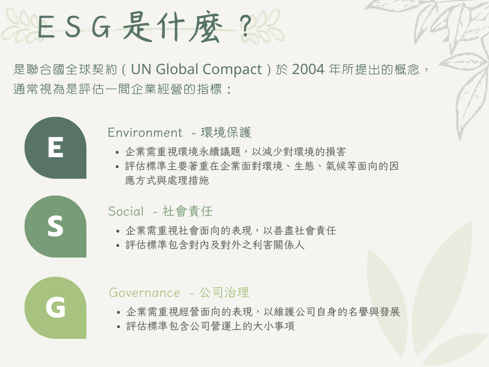
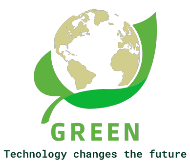

<header>  
  <div class="head_title">
    <div class="welcome-font">
    <span class="welcome">W E L C O M E</span>
    </div>
    <span class="illustrate">ESG議題相關政策</span>
    
  </div>
</header>
<main>
  <div class="container">
    <div class="about-esg">
      
    </div>
    <div class="main-content">
      <div class="main-title-container">
        <div class="main-title">
          <h2><span class="leaf-icon">🍃</span> 綠色環境：</h2>
    <ul>
      <li>環境保護包含廢氣排放量、土壤及污水管理、環境汙染防治與控制。</li>
      <li>政府提供許多汙染管制與環保相關資料，並依法開放給大眾落實資訊公開作業。</li>
      <li>從這裡能更深入了解台灣環保政策以及相關的管制措施。</li>
    </ul>
        </div>
      </div>
      <div class="main-list" >
        <app-mainitem *ngFor="let image of images" [path]="image.path" [title]="image.title" [linkrouter]="image.linkrouter"></app-mainitem>
      </div>
    </div>
  </div>
</main>
<footer>
  <div class="footer-content">
    <div class="earth-img">
      
    </div>
    <div class="option">
      <div class="email">
        <span>如果有任何建議，歡迎來信</span>
        <p>If you have any comments or suggestions, <br> you can send them to the following <br>email: service@bimap.co</p>
      </div>
      <div class="info">
        <span>參考網站</span>
        <p>行政院環境保護署<br>經濟部水利署<br>台灣電力公司</p>
      </div>
    </div>
  </div>
</footer>
